USS Nightingale
Location:: The Shackleton Expanse
Year:: 2381
Portrait:: 
The NCC-60805-C: A colony support and emergency response ship.
Description
A Federation Intrepid Class starship commanded by Captain Robin Zhao. It has a mission profile for colony support and is a first responder ship for emergencies.
Traits
- Federation Ship
- Intrepid Class
- Hope Ship
Namesake
The USS Nightingale is the 3rd ship of its name.
- The original Nightingale was a small medical supply ship in the 2280s.
- In the in the 2370s, the NCC-60805-B was a Nebula Class hospital ship commanded by Captain Nandi Jadeja. The 60805-B was sent behind enemy lines during the Cardassian insurgency, where it collected escape pods and other survivors.
- The current NCC-60805-C Nightingale was commissioned in 2373 and has been serving as a colony support vessel for nearly 10 years
Mission
The Nightingale is outfitted for colony support and provides cargo transfers, medical backup, and miliary presence to new colony worlds. These colonies are the kind of places that deal with the unknowns which still appear even after years of survey and study, so the Nightingale is equipped to response flexibly to a wide variety of needs.
Mission Logs
- Nightingale Log 11 - Looking into the Abyss:
Stardate 57101
The Nightingale pursued Romulans to Omega Draconis, where a black whole seemed to suddenly threaten life on an orbiting planet and also systems up to 100 light years away. The people living on the orbiting planet awaited their ascension, believing they were in no danger. Meanwhile, an away team entered a Tilikaal space station to find the Romulans in the control room. The Nightingale was sent on a mission to the Omega Draconis system to find out what the Romulans were doing there. There, a single planet and a Neutronium space station orbiting a black hole. The black hole itself began rotating, so that it's radiation jets were aligned with the galactic plane. This threatened to utterly destroy the planet, but also throw radiation up to 100 light years away.
On the planet, a landing party found a small colony of less than 1000 people called the Ithik worshiping the black hole. They seemed excited to finally have the Abyss gaze back at them, after they had observed it for thousands of years. The landing party made some attempts to explain that the black hole would obliterate them, but the Ithik remained convinced they would ascend to a high form of existence when the truth of the universe is revealed to them through the black hole.
The Ithik had with them a single artifact from the Tilikaal, similar to the artifact that Banna Stoker used. Commander Vrenta used the artifact to recieve a vision of the Neutronium space station. The landing party then took the artifact, beamed onto a shuttle, and went straight to the space station with only 2 hours until Chaktir would be destroyed.
Siltec used the artifact as a key to enter the station. Inside, they found a small Romulan scout ship in a docking bay. Siltec was able to pick up trace heat signatures left over from when the Romulans passed by. The away team split up into two teams. Siltec and Vrenta found large security robots lined with Neutronium plugged into stations along the walls. Holly Jones and Ujul Atsad found a cloning facility and released a person who claimed to be Akkara, the "mayor" of Chaktir. They were confused about how they got there but remembered being visited by Tilikaal on Chaktir.
Vrenta and Siltec were able to finally locate the station's control room, and sent directions to Cmdr. Jones and Lt. Asad. But the Romulans were already inside.
Crew Members
Department Heads
| Role4 | Rank + " " + file.link + "" | " (" + pronouns + ") - " + Species | "" + Type + "" | Portrait | " > " + Note |
|---|---|---|---|---|---|
| Commanding Officer | Captain Robin Zhao | (they/them) - Human | Supporting Character | 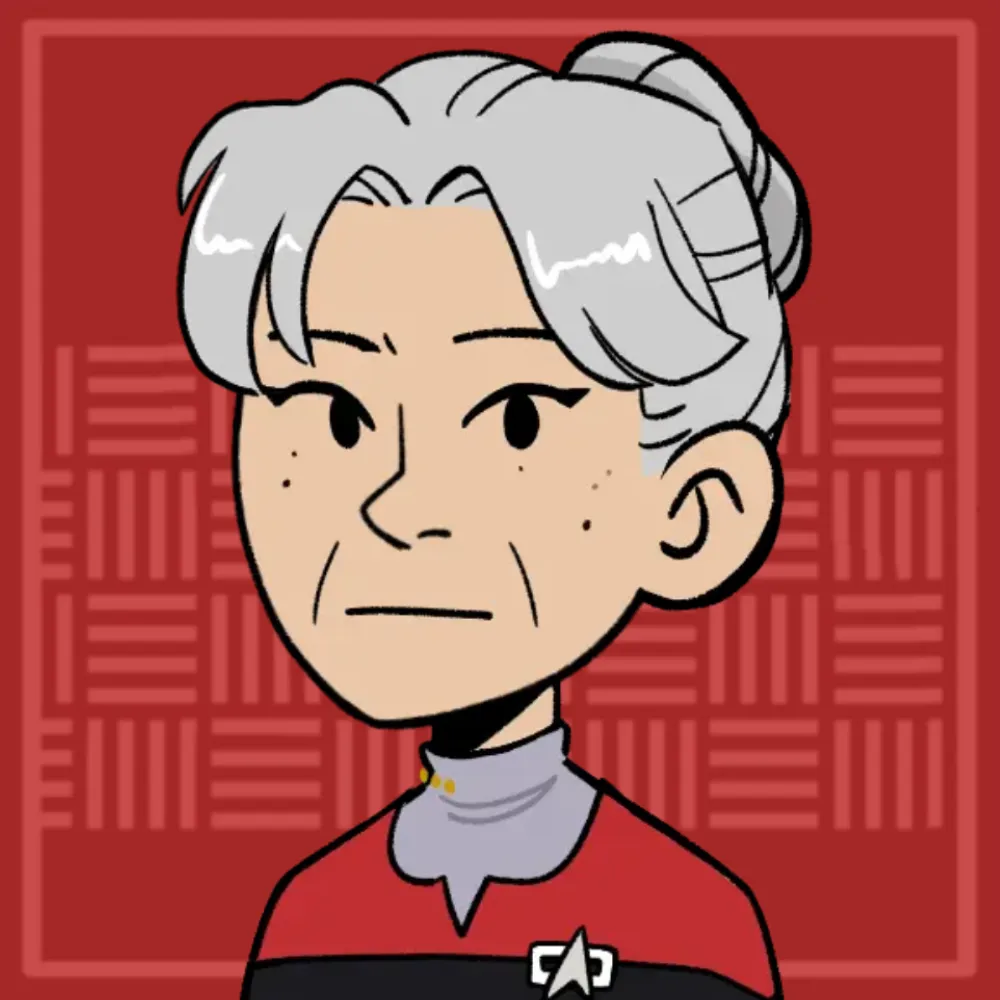 | Captain with a specialization in emergency response. |
| XO, Chief of Security | Commander Vrenta Ewasi | (he/him) - Bajoran | Player Character | 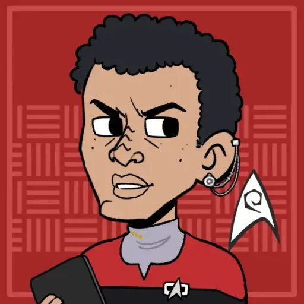 | No nonsense commander with strong ties to Starfleet Intelligence. |
| Ship Doctor | Lieutenant Ujul Asaad | (they/them) - Klingon | Player Character | 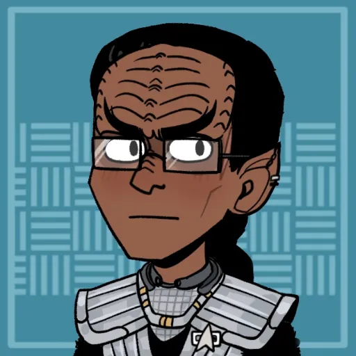 | On an exchange program between the Federation and the Klingon Empire. |
| Chief Engineer | Chief Petty Officer Bas Sa'mi | (he/him) - Andorian | Supporting Character |  | Suspects Valera of using pheromones to gain a career advantage. |
Command Division
| Role4 | Rank + " " + file.link + "" | "(" + pronouns + ") - " + Species | "" + Type + "" | Portrait | "> " + Note |
|---|---|---|---|---|---|
| Commanding Officer | Captain Robin Zhao | (they/them) - Human | Supporting Character | Captain with a specialization in emergency response. | |
| XO, Chief of Security | Commander Vrenta Ewasi | (he/him) - Bajoran | Player Character | No nonsense commander with strong ties to Starfleet Intelligence. | |
| Quartermaster | Lieutenant Commander Serres | (he/him) - Vulcan | Notable NPC | 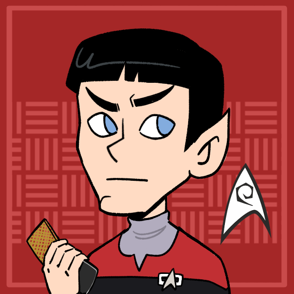 | Wields bureaucracy like a bully and got Yalis reprimanded. |
| Flight Controller | Lieutenant JG Jackson Hayes | (he/him) - Human | Supporting Character | 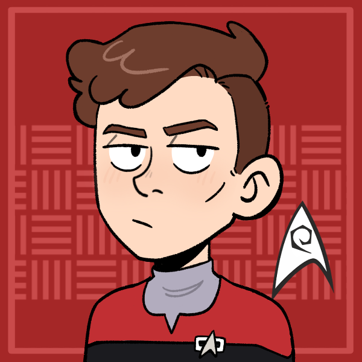 | Jealous of Grey for his connections and mentorship with the captain. |
Sciences Division
| Role3 | Rank + " " + file.link + "" | "(" + pronouns + ") - " + Species | "" + Type + "" | Portrait | "> " + Note |
|---|---|---|---|---|---|
| Ship Doctor | Lieutenant Ujul Asaad | (they/them) - Klingon | Player Character | On an exchange program between the Federation and the Klingon Empire. | |
| Engineering Assistant | Ensign Algan Kader | (he/him) - Betazoid | Supporting Character | 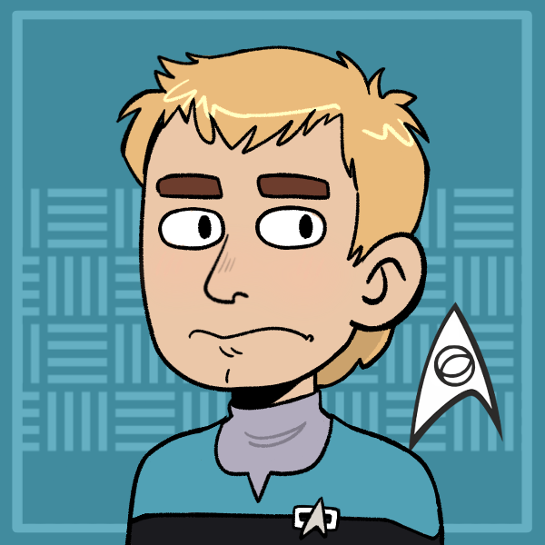 | New, shy, but a brilliant scientist. Mentored by Yalis |
| Ship Doctor | - Emergency Medical Hologram | (any) - Hologram | Supporting Character | 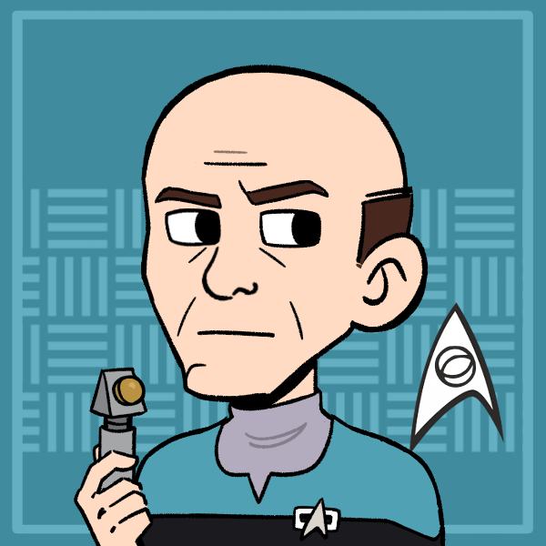 | Everyone's favorite doctor! |
Operations Division
| Role6 | Rank + " " + file.link + "" | "(" + pronouns + ") - " + Species | "" + Type + "" | Portrait | "> " + Note |
|---|---|---|---|---|---|
| Operations Manager | Lieutenant Commander Kepler Faraday | (they/them) - Human | Supporting Character | 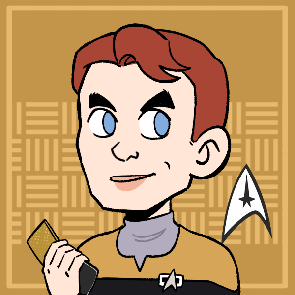 | Disappointed in Valera for turning down a promotion. |
| Intelligence Agent | Lt. Commander Holly Jones | (-) - Human | Player Character | 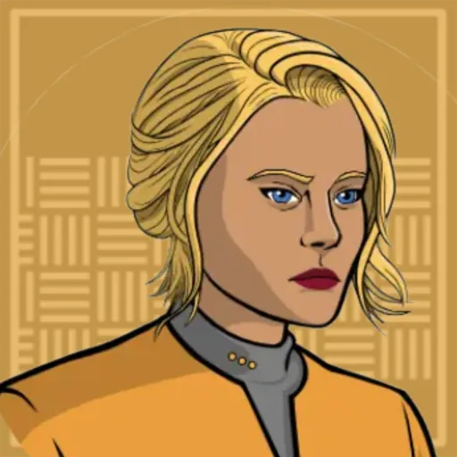 | Assigned to the Nightingale by Starfleet Intelligence to provide intel on the Expanse back to command. |
| Transporter Chief | Lieutenant Quentin Locke | (he/him) - Human | Supporting Character | 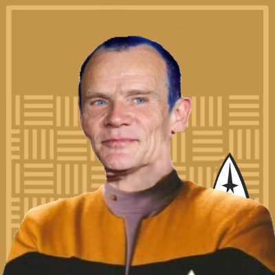 | Pushes the sliders up really well! |
| Away Team Security Chief | Chief Petty Officer Artax | (he/him) - Edosian | Supporting Character | 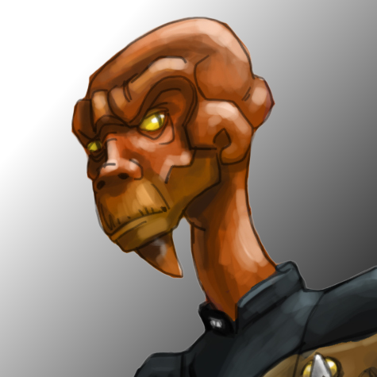 | Commands away team security, namely Siltec. |
| Chief Engineer | Chief Petty Officer Bas Sa'mi | (he/him) - Andorian | Supporting Character | | Suspects Valera of using pheromones to gain a career advantage. |
| Security Specialist | Petty Officer Siltec Nol | (he/him) - Cardassian | Main Character | 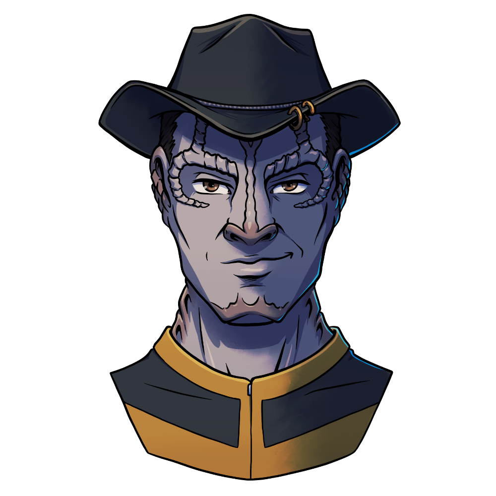 | Formerly recruited by Starfleet Intelligence. Now just looking to do some good in the world. |
Passengers
| Role0 | Rank + " " + file.link + "" | "(" + pronouns + ") - " + Species | "" + Type + "" | Portrait | "> " + Note | "VALUES" | Value1 | Value2 | Value3 | Value4 |
|---|
Ship Locations
Facilities
| File5 | "> " + Note |
|---|---|
| The Bridge | Commanded by Captain Robin Zhao. |
| Holodeck | Where Siltec likes to ride and Yalis likes to fight. |
| Engine Room | Valera find peace and solace here, listening to the hum of the warp core. |
| Crop Sciences Lab | Yalis's favourite place on the ship. Hosts a variety of crops for different climates that could be found in the colonies. |
| Biolab | Connected to the Sick Bay and hosts an well tuned fecal matter analysis system. |
Shuttles
The Nightingale is equipped with dozens of shuttles. Some notable ones are listed below!
| File1 | "> " + Note |
|---|---|
| The Marie Curie | - |